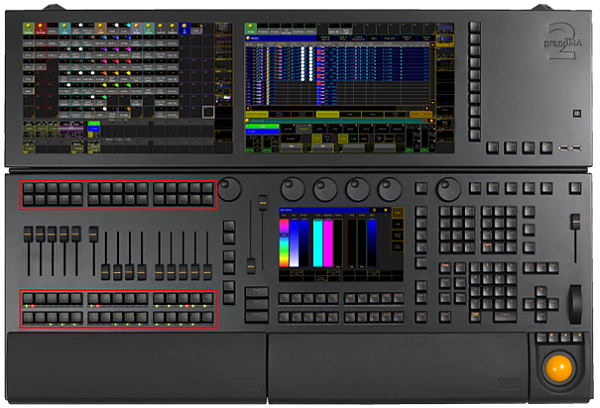

The executor buttons are located above and below the faders.

Location executor buttons
Each executor button has a number.
By default, the executor buttons interact with the command line. To disable the interaction of the executor with the command line (= Exec CLI), go to Setup I Local Settings.
Pressing an executor button on a fader or a button page executes the assigned function.
[time] : Executing: Select ExecButton 1.1
[time] : Realtime: Go Executor 1.6
Pressing an executor button on a channel page executes the functions off, on or flash.